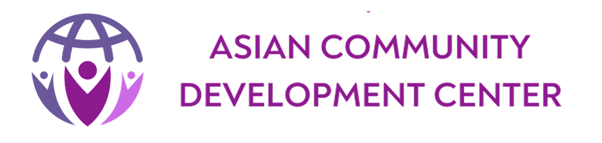

Core terms
Learn words you will hear in IT support and security roles.

Build your skills
A short intro to common security terms and habits that protect devices, accounts, and data.
Start here
Use this page as a quick foundation before you enroll. Focus on language and behaviors you can explain in class, labs, and interviews.
Ready to enroll?
Open the ACDC signup page to continue with the course.